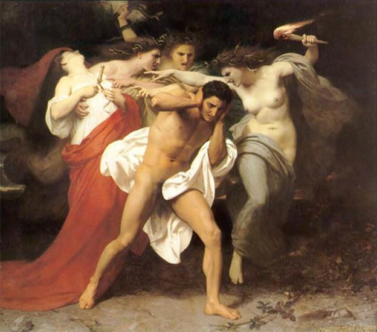

Agamemnon lấy Clytemnestre sinh được bốn người con: ba gái, một trai. Gái là Chrysothémis, Électre (còn gọi là Laodicé), Iphigénie (còn gọi là Iphianassa); trai là Oreste. Khi Agamemnon bị mưu sát, Oreste mới hơn mười tuổi. Électre nhanh trí cho người đưa em sang lánh nạn ở xứ Phocide. Vua xứ Phocide là Strophios, vốn là em rể của Agamemnon, đã chăm nom nuôi nấng Oreste như con cái trong nhà. Một tình bạn thân thiết đã hình thành giữa Oreste và Pylade, người con trai của nhà vua.
Năm tháng trôi đi, Oreste đến tuổi trưởng thành. Giờ đây chàng đã là một thanh niên cường tráng, thông minh, nhanh nhẹn, tràn đầy sức sống, và nghĩa vụ đầu tiên của người thanh niên này là phải rửa sạch mối thù cho cha để giành lại ngôi báu, nhưng chàng không thể thực hiện ngay được. Một việc trọng đại như thế phải được thần thánh chỉ bảo, chàng lặn lội tới đền thờ Delphes để xin thần Apollon ban cho một lời chỉ dẫn. Thần Apollon tuyền phán: Oreste hỡi! Nợ máu phải trả bằng máu. Công lý chẳng tha những kẻ gây tội ác và tiếm quyền. Tuân theo lời chỉ dẫn của thần, Oreste lên đường trở về quê hương Argos để thực hiện sứ mạng. Cùng đi với chàng có người bạn chí thiết gắn bó từ tuổi thơ là Pylade.
Sau nhiều ngày miệt mài cất bước trên những dặm đường cát bụi, một ngày kia, hai người, Oreste và Pylade, đặt chân đến mảnh đất Argos, quê hương thân yêu của Oreste. Việc đầu tiên của họ là viếng mộ Agamemnon. Nhìn thấy mộ cha, Oreste xúc động quỳ xuống cầu khấn. Chàng cầu xin thần Hadès của thế giới âm phủ hãy rủ lòng thương đến số phận bất hạnh của cha chàng, hãy bảo vệ chàng và giúp đỡ chàng trong sự nghiệp lớn lao mà chàng sắp thực hiện. Chàng cầu khấn linh hồn người cha danh tiếng của mình:
- Agamemnon cha ơi! Hôm nay đứa con trai của cha đã khôn lớn và trở về quê hương. Nó đến nơi yên nghỉ của cha để khóc thương cho số phận của cha, để cầu khấn linh hồn cha. Cha ơi! Cha có nghe thấy không tiếng nói của con, tiếng con đang gọi cha, cầu khấn cha! Con đã cắt một nắm tóc để hiến dâng cho thần Sông-Inachos, vị thần đã nuôi nấng con cũng như nuôi nấng những người Argos, và giờ đây, bên mộ cha, con hiến dâng linh hồn cha một nắm tóc nữa của con để bày tỏ lòng biết ơn công lao nuôi dưỡng của cha. Số phận nghiệt ngã đã không cho con được nhìn thấy cha lần cuối cùng khi cha vĩnh viễn về vương quốc của thần Hadès, không cho con được hôn cha trước khi họ làm lễ khâm liệm và mai táng thi hài của cha, và con cũng chẳng được khóc thương cha...
Bỗng Oreste trông thấy từ cung điện một đám nữ nô lệ trong y phục đen đi về phía chàng. Chàng vội ra hiệu cho Pylade biết. Hai người bèn lui bước tìm một chỗ kín đáo ở phía sau ngôi mộ, giấu mình theo dõi xem đám nữ tỳ đó làm gì. Oreste nhận ra trong đám nữ tỳ có người chị ruột của mình là Électre. Nhìn thấy chị mình trong đám nữ tỳ ăn mặc như họ, tóc bị cắt ngắn như họ, Oreste trong lòng rất đỗi xót xa. Chị đã bị đối xử tàn tệ như thế hẳn vì tội phản kháng, không thừa nhận cuộc hôn nhân của Égisthe với Clytemnestre, hẳn rằng vẫn nuôi giữ trong lòng nỗi thương nhớ người cha danh tiếng lẫy lừng. Đoàn nữ tỳ tới ngôi mộ của chủ tướng Agamemnon. Họ mang theo lễ vật, rượu thiêng để làm lễ cầu nguyện linh hồn Agamemnon theo lệnh của Clytemnestre. Vì sao lại có chuyện kỳ lạ như vậy? Vì sao cái người đàn bà đã đang tâm đồng loã với tình nhân giết chồng, đầy đọa con chồng lại sai nữ tỳ đi dâng lễ vật, cầu nguyện linh hồn người chồng? Nguyên do là hôm trước, một cơn ác mộng đã trùm xuống giấc ngủ của mụ. Cơn ác mộng khủng khiếp rắc rối như thế nào ta không rõ. Chỉ rõ mụ thét lên kinh hoàng và rồi tỉnh dậy. Tỉnh dậy mà vẫn chưa hoàn hồn. Phải một lúc lâu sau mụ mới trấn tĩnh lại được và cho mời những nhà tiên tri tới để luận giải. Hết thảy các nhà tiên tri đều nói rằng, cứ như mộng triệu mà suy thì có dễ là được sự chấp thuận của thần linh, những người chết dưới vương quốc của thần Hadès, những oan hồn nổi cơn thịnh nộ đối với những kẻ đã ám hại họ. Những oan hồn này đòi Công lý phải thể hiện quyền lực của mình... Nghe lời luận giải của những nhà tiên tri, Clytemnestre vô cùng sợ hãi, và chính vì lẽ đó mà mụ sai những nữ tỳ đem lễ vật tới viếng mộ Agamemnon cầu nguyện oan hồn Agamemnon tha tội cho mụ, nhưng những người nữ tỳ này vốn không quý mến gì Clytemnestre vì đã phạm vào một tội ác kinh khủng: giết chồng. Hơn nữa vì Clytemnestre thường hay làm tình làm tội, hành hạ họ vì họ là những người phụ nữ thành Troie bị bắt làm tù binh. Nhìn thấy họ là mụ lại nghĩ đến người chồng đã bị mụ giết, người chồng đã vì cuộc chiến với những người Troie này mà gây ra cho mụ biết bao đau khố tới chỗ phạm vào tội ác.
Électre dẫn đầu đám nữ tỳ mang lễ vật đi cầu khấn. Nàng băn khoăn không biết nên cầu khấn như thế nào? Lẽ nào nàng lại cầu khấn cho nguyện vọng của Clytemnestre: Xin oan hồn Agamemnon tha tội? Nàng bày tỏ tâm sự của mình với một người nữ tỳ. Theo lời khuyên của nữ tỳ, lễ cầu nguyện sẽ thực hiện ngược lại với ý định của Clytemnestre. Électre kính cẩn tưới rượu thiêng lên mộ cha và quỳ xuống giơ hai tay lên trời cầu khấn. Nàng cầu xin vị thần Hermès, người đưa dắt các linh hồn và người truyền lệnh nhanh chóng, trung thành nhất tới các thần linh, hãy truyền đạt lại những mong muốn của nàng tới các vị thần âm phủ là những vị thần đã theo dõi và biết chuyện bọn gian phu, dâm phụ mưu sát cha nàng. Nàng cầu xin các vị thần cũng như vị thần Đất Mẹ thiêng liêng đã sản sinh ra muôn giống loài hãy lắng nghe và chấp nhận lời khấn nguyện của nàng. Nàng cầu khấn vong hồn của người cha thân yêu, kể lại nỗi bất hạnh mà nàng và em nàng là Oreste phải chịu đựng từ khi cha bị giết. Nàng xin cha hãy giúp cho Oreste trở về Argos nhanh chóng và bình yên. Nàng cầu xin Công lý hãy trả thù cho cha nàng, lũ người tàn bạo sẽ bị trừng phạt...
Cẩu nguyện, dâng lễ vật, rẩy rượu thiêng... sau khi đã làm đầy đủ và trọn vẹn những nghi lễ thiêng liêng, Électre và đám nữ tỳ thu xếp để ra về thì chợt Électre trông thấy một búp tóc đặt ở chân mộ. Nàng cầm tóc lên và bỗng nhiên bàng hoàng xúc động. Búp tóc cắt dâng ở mộ cha nàng giống tóc của nàng. Phải chăng tóc này là của Oreste, đứa em trai thân thiết xa vắng đã lâu ngày của nàng? Nếu Oreste đã lớn khôn trở về thì sao cậu ta lại không xuất hiện mà chỉ tới đây để đặt một nắm tóc? Có thể là tóc của người Argos nào chăng? Électre để ý thấy quanh mộ có những dấu chân, và đó là dấu chân của hai người. Liệu có thể Oreste trở về cùng với một người bạn không? Đang khi Électre phân vân, trao đổi với một người nữ tỳ thì Oreste xuất hiện. Chàng đến bên người chị thân yêu của mình và khẽ cất tiếng gọi. Électre quay lại. Nàng không nhận ra được đứa em của mình. Đã bao năm trời xa cách, hình ảnh đứa em trai trong trí nhớ của nàng chỉ là một chú bé thơ dại. Còn giờ đây một thanh niên cường tráng đĩnh đạc, phong thái như một dũng sĩ đang đứng trước mặt nàng. Nàng ngỡ ngàng bối rối. Oreste hiểu tình cảm của chị mình. Chàng lấy trong túi ra một bộ quần áo dâng lên trước mặt người chị thân yêu, đây là bộ quần áo xưa kia do chính tay Électre dệt và may cho chàng. Électre xúc động, ôm lấy em, nước mắt tuôn trào. Nàng kể lại cho em nghe nỗi cực nhục, cay đắng mà nàng phải sống trong cái tòa lâu đài tội lỗi. Oreste nói ngay cho chị biết: chàng trở về Argos theo lệnh của vị thần Apollon. Chính thần đã phán truyền cho chàng biết, chàng phải lãnh sứ mạng đương đầu với nỗi hiểm nguy trong cuộc tử chiến với những kẻ đã giết cha chàng. Nếu chàng không hoàn thành sứ mạng trả thù cho người cha vinh quang đã bị ám hại một cách đê hèn thì nhiều thảm họa sẽ giáng xuống cuộc đời chàng. Ngôi báu của chàng sẽ mất vĩnh viễn và cuộc đời chàng cũng tiêu vong. Trí khôn, óc minh mẫn chẳng còn, những bệnh tật kỳ quái sẽ giày vò chàng liên miên hết ngày này sang tháng khác mà không phương thuốc gì cứu chữa nổi. Oan hồn của người cha sẽ nổi giận, chẳng thèm nhìn nhận đến đứa con trai. Những lời cầu khấn của đứa con trai không trả thù được cho cha trước bàn thờ trở nên vô nghĩa, bởi vì linh hồn người cha thân yêu của nó đã từ bỏ nó... Oreste đã nói cho chị mình biết như thế, và giờ đây hai chị em chỉ còn cách thực hiện bằng được sứ mạng mà thần Apollon đã trao. Électre sẽ trở về cung điện trước để theo dõi tình hình. Nếu thấy có điều gì khả nghi thì báo cho Oreste biết. Còn Oreste và Pylade sẽ đến cung điện sau.
Trước khi hành động, Oreste dò hỏi xem giấc mộng khủng khiếp mà đêm vừa qua Clytemnestre vừa gặp phải là như thế nào. Chàng muốn biết tường tận để tìm hiểu xem liệu nó có ứng nghiệm chút gì với những lời phán truyền của thần Apollon. Oreste được một người tiết lộ cho biết câu chuyện mộng mị đó như sau: Clytemnestre nằm mơ thấy mình sinh ra một con rắn. Bà ta đã nuôi nấng con rắn đó như một đứa con với muôn vàn tình thương yêu. Con rắn được quấn bọc trong tã lót và bú sữa từ bầu vú của bà, và trong khi bú sữa ở bầu vú mẹ, con rắn đã hút ra từ bầu vú một cục máu, một giọt máu đỏ tươi, và máu, máu từ vú của bà ta chảy tràn ra lênh láng, khủng khiếp... Bà ta thét lên kinh hoàng...
Nghe xong câu chuyện, Oreste mừng thầm trong bụng. Chàng cảm thấy như thánh thần đã linh báo cho chàng biết sứ mạng trả thù luôn được thánh thần theo dõi, phù hộ.
Oreste và Pylade đến cung điện trong y phục cải trang của người dân miền Daulis xứ Phocide. Hai người được Clytemnestre tiếp đãi trân trọng. Oreste nói:
- Thưa bà! Chúng tôi đường đột tới cung điện nguy nga này vì một việc vô cùng quan trọng mà thực ra những người dân thường như chúng tôi vốn không có công việc gì phải lui tới những chốn cao sang như thế này. Số là nhà vua xứ Phocide tên là Strophios được biết chúng tôi sắp lên đường đi Argos. Nhà vua khẩn thiết nhờ chúng tôi tới cung điện Argos báo cho vị vua ở đây biết một tin chẳng lành: Oreste, người con trai của nữ hoàng Clytemnestre đã qua đời. Nhà vua của chúng tôi muốn được biết thân nhân của chàng trai xấu số quyết định lo liệu việc mai táng như thế nào? Đưa hài cốt về quê hương Argos hay cứ để ở Phocide làm lễ tang ở đó? Thưa bà! Đó là tất cả những điều gì mà nhà vua Phocide giao phó cho chúng tôi tới đây để tâu trình. Chúng tôi cũng mang theo đây bình đựng tro hài cốt của chàng trai bất hạnh đó. Chúng tôi chờ đợi sự trả lời của thân nhân để tâu trình lại cho nhà vua chúng tôi được biết. Vậy cuối cùng, xin bà thứ lỗi, chẳng hay bà có phải là người chủ của tòa lâu đài này không hay bà có phải là thân nhân của chàng Oreste không? Bởi vì chúng tôi muốn chính cha mẹ của chàng trai được biết tin này và trả lời cho chúng tôi rõ ý định.
Nghe xong câu chuyện, trong lòng Clytemnestre rất đỗi vui mừng nhưng bề ngoài lại làm ra vẻ u buồn sầu não. Mụ trân trọng mời hai người khách vào phòng nghỉ. Tiếp đó mụ tức tốc sai người báo cho Égisthe, tên tiếm vương, chồng mụ, lúc này đang bận việc ở ngoài thành đô biết tin vui. Mụ mời Égisthe về ngay để tiếp khách. Như vậy, người lãnh sứ mạng trả thù cho Agamemnon không còn nữa. Mụ không còn phải lo lắng về số phận bản thân mà mối thù giữa hai dòng họ Atrée và Thyeste như lời nguyền rủa độc địa và sự tiên định của Số mệnh cũng chấm dứt.
Égisthe được tin bèn vội vã về ngay cung điện. Hắn vui mừng đến nỗi không gọi lính hộ vệ đi cùng. Vừa bước chân vào cung điện, Oreste rình sẵn từ phòng bên, nhảy sổ ra đâm cho một nhát kiếm. Hắn chỉ kịp kêu lên một tiếng rồi ngã xuống chết tươi. Gia nhân trong lâu đài thấy chủ tướng bị giết vội hô hoán ầm lên. Clytemnestre từ phòng mình vội vã chạy ra để xem sự thể ra sao. Oreste cầm kiếm xông lên, người mẹ tội lỗi sợ hãi run lên. Mụ quỳ xuống dưới chân đứa con trai van xin:
- Oreste hỡi con! Hãy dừng tay! Dù sao con cũng phải biết ơn và kính trọng ta là người đã sinh nở ra con, cho con bú mớm, bế ẵm con. Lẽ nào con không còn một chút tình thương đối với mẹ?
Oreste bối rối. Người bạn Pylade nhắc nhở chàng thực hiện nghĩa vụ mà thần linh đã giao phó. Chàng phải lựa chọn một trong hai điều khắc nghiệt: hoặc là bị thế gian thù ghét, lên án, kết tội hoặc là bị thần linh ghét bỏ, trừng phạt.
Oreste thấy không thể cưỡng lại lời truyền phán của thần linh. Giết mẹ, chàng sẽ bị những nữ thần Érinyes, những con chó cái của sự báo thù như người ta thường nói, truy đuổi, nhưng không giết mẹ thì các vị thần, nhất là vị thần Apollon, người đã phán truyền những lời sấm ngôn thiêng liêng quy định cho nghĩa vụ và hành động của con người, cũng không tha tội cho chàng. Cuối cùng, Oreste hành động theo nghĩa vụ mà thánh thần đã truyền phán, và đó cũng là Số mệnh đã sắp đặt. Chàng dẫn Clytemnestre, người mẹ của tội ác vào trong cung điện và hành quyết. Xác chết của đôi gian phu dâm phụ Égisthe và Clytemnestre được đặt nằm bên nhau như ngụ ý một lời răn: Công lý chẳng dung tha những kẻ đã gây ra tội ác.
Được tin tên tiếm vương bạo chúa Égisthe và mụ vợ đanh ác đã bị giết, nhân dân đô thành Argos vô cùng hởi lòng hởi dạ. Chẳng một ai thương tiếc, than vãn cho số phận của chúng, nhưng cũng chẳng một ai ca ngợi hành động giết mẹ của Oreste như một chiến công.
Còn Oreste, chàng phải thanh minh trước nhân dân về hành động của mình. Chàng cảm thấy số phận chàng như một người đánh xe ngựa mà những con ngựa đã bung ra thoát khỏi sự điều khiển của chàng. Sở dĩ chàng dám nhẫn tâm làm một việc ghê gớm như thế là vì lời truyền phán của thần Apollon. Chính thẩn Apollon đã làm cho trái tim chàng trở nên cứng rắn, không biết xúc động khi cầm kiếm đâm vào cổ mẹ. Song giờ đây chàng phải ra đi, tự trục xuất khỏi xứ sở này. Ngôi báu xin nhường lại cho Ménélas trong tương lai sẽ trở về.
Bỗng trước mắt Oreste hiện ra những nữ thần Érinyes, những người đàn bà mõm chó, tóc là một búi rắn độc ngoằn ngoèo, đầu rắn cất lên tua tủa quằn quại. Những nữ thần Érinyes mặc đồ đen, chĩa đôi mắt dữ tợn của mình nhìn thẳng vào mặt Oreste như chất vấn, như tra hỏi. Oreste rụng rời sợ hãi. Chàng ôm đầu kêu lên, và chàng ra đi, chàng phải tới đền thờ Delphes cầu xin thần Apollon bảo vệ. Những nữ thần Érinyes quyết không tha tội sát nhân, hơn nữa một tội ác khủng khiếp chưa từng thấy: con giết mẹ. Các nữ thần quyết truy đuổi Oreste đến cùng.

Oreste và các nữ thần Érinyes